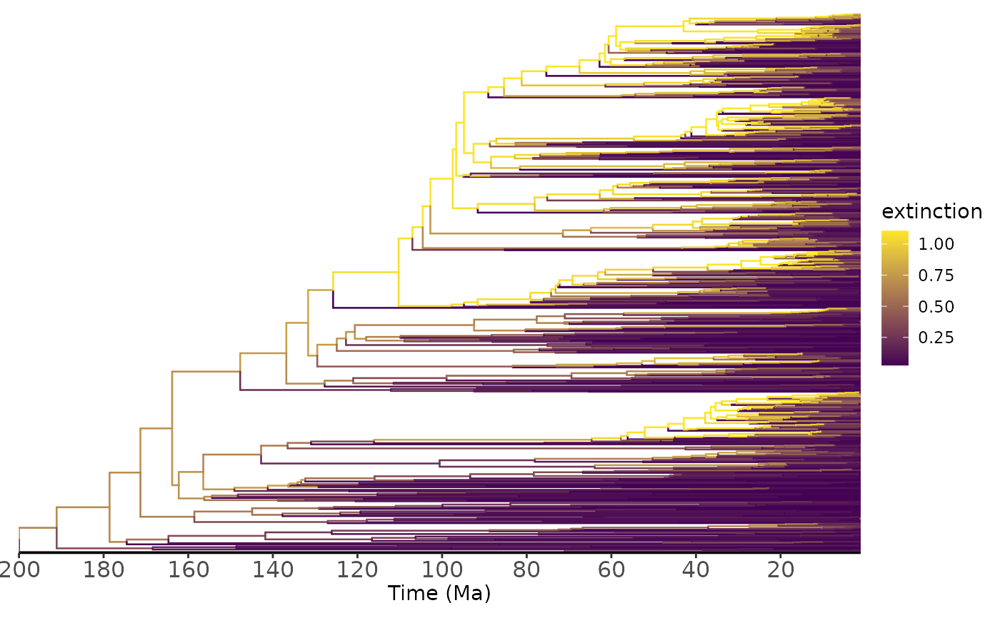
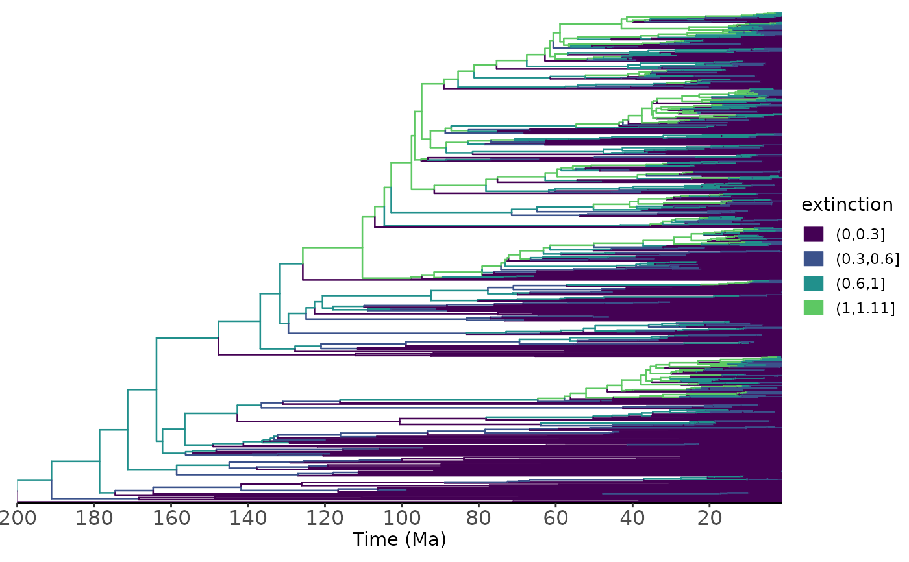

R/utilhisse.R
h_rate_recon.RdA function to plot a (model-averaged) marginal ancestral reconstruction for the estimated diversification rates.
h_rate_recon( processed_recon, show_tip_labels = FALSE, parameter = "turnover", discrete = FALSE, breaks = seq(0, 1, 0.2), colors = viridis(n = 2), plot_as_waiting_time = FALSE, tree_layout = "rectangular", tree_direction = "right", time_axis_ticks = 10, open_angle = 10 )
| processed_recon | An object produced by |
|---|---|
| show_tip_labels | Logical, whether to plot tip labels. Default is FALSE because it is difficult to plot legible tip labels for larger trees common in this type of analysis. See |
| parameter | The diversification parameter to be mapped onto the tree. Possible options are turnover, extinct.frac, net.div, speciation, extinction |
| discrete | Logical. Whether to discretize the distribution of reconstructed rates into bins |
| breaks | A numeric vector of cut points for binning the rates. Passed internally to |
| colors | Colors for the branches. If |
| plot_as_waiting_time | Whether to plot the rates (FALSE, default) or their inverse (waiting times) |
| tree_layout | A layout for the tree. Available options are 'rectangular' (default), 'slanted', 'circular', 'fan' and 'radial'. |
| tree_direction | 'right' (default), 'left', 'up', or 'down' for rectangular and slanted tree layouts |
| time_axis_ticks | numeric giving the number of ticks for the time axis (default=10) |
| open_angle | The degrees of empty space between the first and last tip. Only works for |
A plot of the phylogeny with branches colored by hisse-inferred marginal ancestral states.
data("diatoms") processed_hisse <- h_process_recon(hisse_recon=diatoms$cid4_recon) h_rate_recon( processed_recon = processed_hisse, parameter = "extinction", discrete=FALSE)h_rate_recon( processed_recon = processed_hisse, parameter = "extinction", discrete=TRUE, breaks=c(0.3, 0.6, 1))#>#> [1] 0.000000 0.300000 0.600000 1.000000 1.105488#>